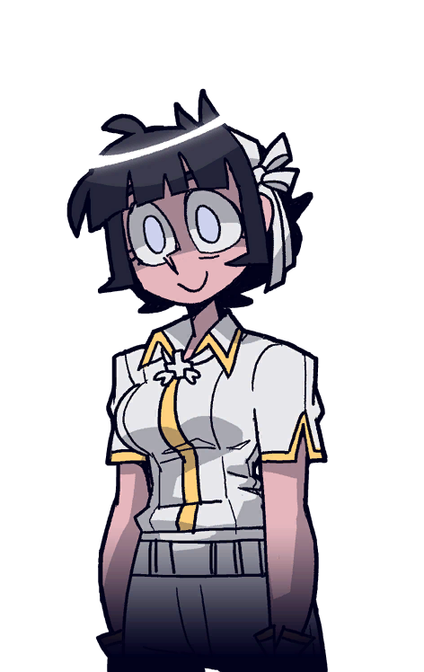

<!DOCTYPE html>
<html lang="en">

<head>
    <meta charset="UTF-8">
    <meta name="viewport" content="width=device-width, initial-scale=1.0">
    <link href="https://fonts.googleapis.com/css2?family=Crimson+Pro:wght@700&display=swap" rel="stylesheet">
    <title>Azazel</title>
    <link rel="stylesheet" href="css/reset.css">
    <link rel="stylesheet" href="css/styleforchar.css">
    <link rel="shortcut icon" type="image/ico" href="images/favicon.ico">
</head>

<body>
    <div class="wrapper">
        <header>
            <div class="head">
            </div>
        </header>
        <div class="body">
            <div class="container">
                <div class="content">
                    
                    <div class="image Az">
                        
                    </div>
                    <div class="char__door">
                        <a href="hub.html">
                            
                        </a>
                    </div>
                </div>
            </div>
        </div>
        <footer>
            <div class="foot">
                <div class="text__bars">
                    <div class="name">
                        <div class="title__text">
                            <p class="dot">•</p>
                            <p>Azazel, The Curious Angel</p>
                            <p class="dot">•</p>
                        </div>
                    </div>
                    <div class="info__block">
                        <div class="quote__block">
                            <p class="quote">"Oh my heavens! What would a living human be doing in hell? Most unusual."</p>
                        </div>
                        <div class="text__block">
                            <div class="text__block__top Az__text">
                                <p>Azazel contrasts the demons in Hell by wearing a white, almost militaristic uniform, with yellow lining on her collar, sleeves, gloves, and down the middle of her shirt. As well, she wears a necklace under the collar of
                                    her uniform, which meets to hold a square cross with leaves protruding from under it. In the art book, it's shown that she wears pants with a belt, and white boots with straps on the top, with typical silver lining
                                    on the straps.
                                </p>
                                <p> Azazel is shown to be curious, as is her name, venturing down into hell by herself to collect information on Demons. She's shown to typically be writing down notes, and is determined to do so, as in the epilogue, although
                                    seeming traumatized by her experiences in the demon harem, she still continues to take notes.
                                </p>
                            </div>
                            <div class="image__text Az__text__img">
                                
                            </div>
                        </div>
                    </div>
                </div>
            </div>
        </footer>
    </div>
</body>

</html>